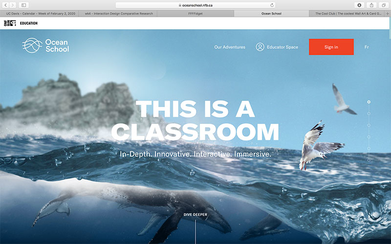

FFFFidget.com is a website that has a single fidget spinner that the user can interact with and spin. This website pertains to one of the topics I'm researching which is integrating kids with ADHD. I find this website especially interesting because the website is interactive and based of a real life product that helps children with learning disorders. Additionally, the background changes colors depending on how fast the user spins the fidget spinner which is another interactive feature that I could potentially incorporate. Although this website is simple, I think it still serves its purpose.
The second website I chose to research is a lot more interactive. Ocean school is a education website to teach their audience the influence we have on the ocean. All of the interactions on the website are slowed down. For example, when you mouseover buttons, they move in a slow wave-like manner, simulating the ocean waves. When scrolling, the scroll feature is super slow which makes it feel like I'm diving into the ocean as I scroll down into the website. Even the menu is dropped down in a wave. Everytime the user interacts with this website something will move or adjust, such as a paralax effect, moving layers, or interactive buttons. All in all, I think this website does a good job getting the user's attention and it would be a good format for a website that is supposed to educate the user. In my brainstorm I was looking into ways to teach and educate american sign language or a translation website and this website style could potentially be a interesting way to teach the user.